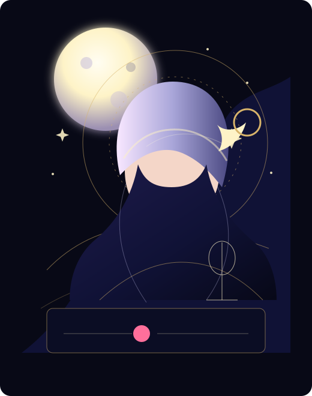

眠る前に立ち寄れる夜枠中心。
Lunar Song Streamer
月詠ルナ
Tsukuyomi Luna
月のように、そっと心を照らす歌を。眠る前の歌枠、星占い相談、静かな雑談を夜更けに配信しています。

Schedule
すべて見る- 弾き語り / Acoustic
- 歌枠 / Singing Stream
- 雑談 / Talk Stream
- ASMR / Whispering
Follow
Contact
歌唱案件、占い企画、イベント出演のご相談はこちら。
お問い合わせフォームへProfile
夜に寄り添う、月読みの歌い手。
月詠ルナは、歌枠と星占いを軸にした夜型ストリーマーです。日曜の定期歌枠、火曜の月読み相談、金曜の弾き語りで、初見でも入りやすい静かな時間をつくります。
声と占いでゆっくり滞在できる構成。
感想、FA、切り抜きの共通タグ。
Weekly Orbit
今週の観測予定
満ちる月の歌枠
初見歓迎。リクエスト曲とオリジナル曲を半分ずつ。
Live月読み相談室
恋愛、仕事、活動の迷いをカードでゆっくり読む夜。
Reserve星降る弾き語り
アコースティック中心。アーカイブは週末のみ公開。
ArchiveArchive
はじめての方に聴いてほしい夜。
Community
観測者のみなさんへ
Business Contact
お仕事のご依頼・お問い合わせ
歌唱案件、占い監修、イベント出演、企業タイアップは、希望時期、媒体、公開範囲、予算感を添えてご相談ください。ファンメッセージとは別窓口で確認します。